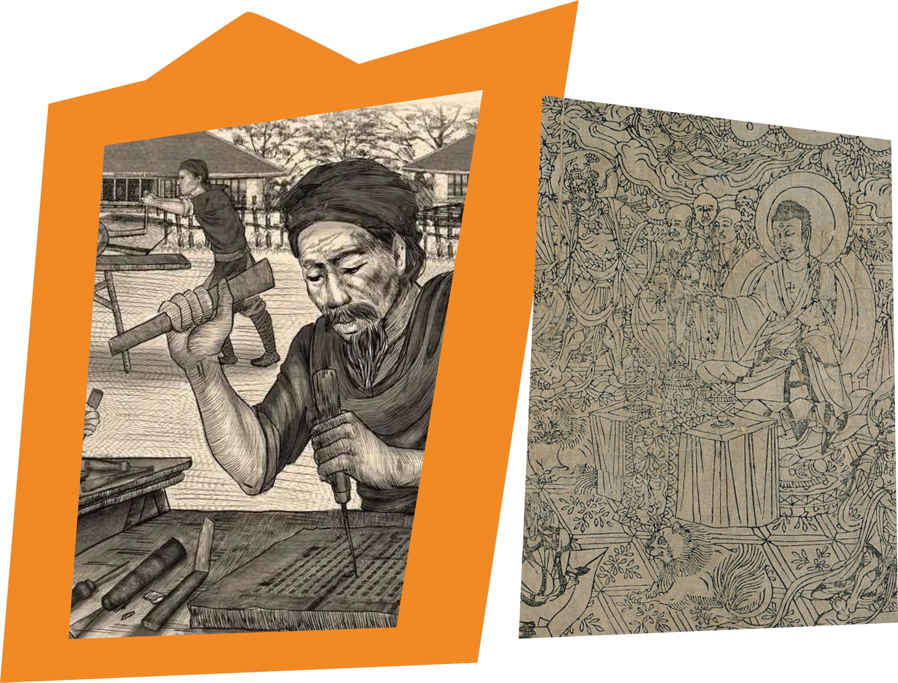

Block printing is a style of relief printing that involves carving an image into a block, in my case rubber, but often wood, rubber, or linoleum. Ink is then rolled and the carved surface, creating an image. The block is laid on top of the intended print surface (paper, fabric, clothing) and pressure is applied, applying the inked image and producing a print. The process originated in China, in 200 AD, used to convey Buddhist spiritual teachings, and quickly spread to places like Japan, India and Vietnam.
what is block printing?
By the 10th century, block printing had spread to North Africa and the Byzantine Empire, with a more diversified array of subjects and purposes. By the 13th century, believed to be through the way of the Silk Road, block printing reached Europe. Originally used for textile patterns in Europe, it later evolved to whole images on sheets by the end of the century. Most of these prints were religious in nature, printing an outline and filling in the color by hand. Block printing has a direct relationship with the invention of the printing press and the advent of mass produced books. Movable type printed books were more expensive to produce, and whole page block-books, woodcut books with texts and images, were common for heavily illustrated works.
how did it spread?


what does it look like now?
Modern block printing builds on these traditional techniques by incorporating new materials and modern tools. Compared to the more traditional methods using hand-carved wooden blocks and natural dyes, contemporary artists are more likely to use rubber or linoleum. Block printing has increasingly become more accessible, serving as a low cost method of mass producing and sharing prints. The process of producing and disseminating these handmade prints, and all of the social engagement that fosters, is inherently at odds with anything shed by mass industry and capitalist means of production. Analog printmaking is contrarian, and contrarianism can quickly become resistance.

 my prints
my prints